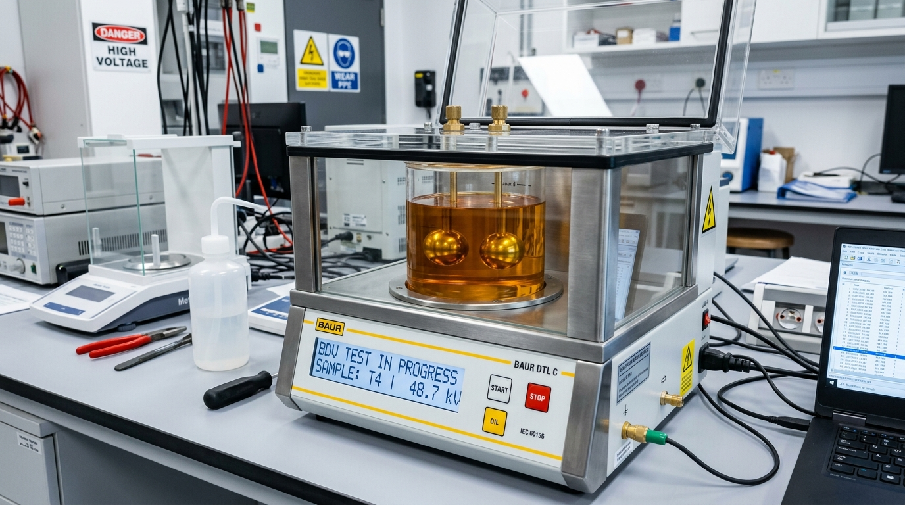
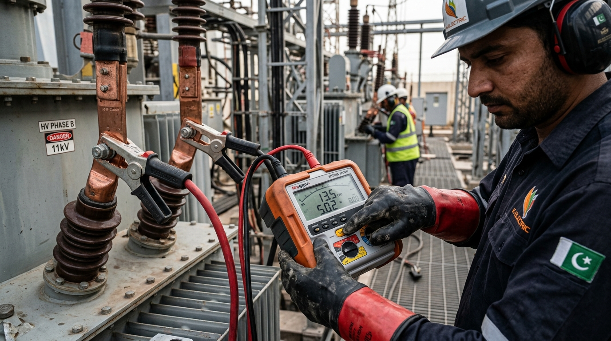
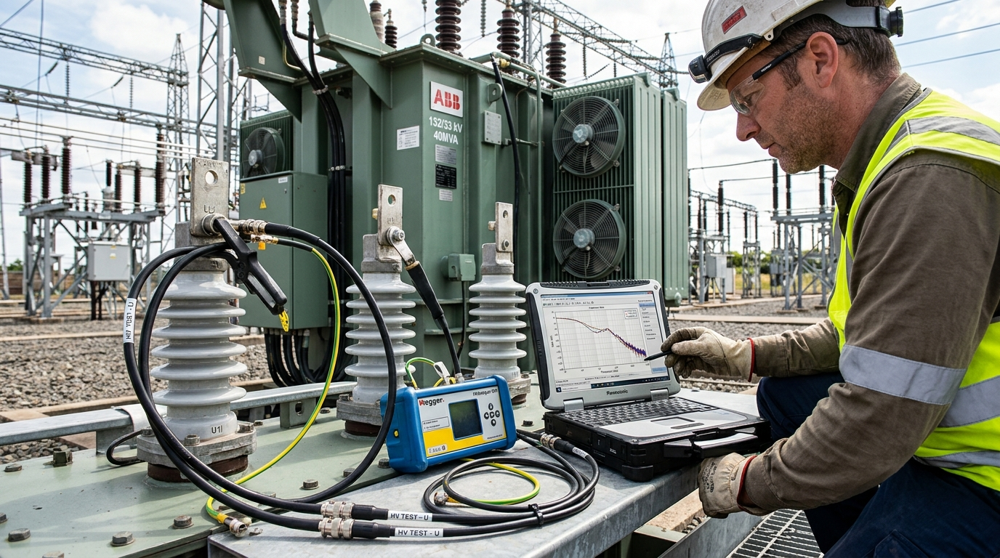
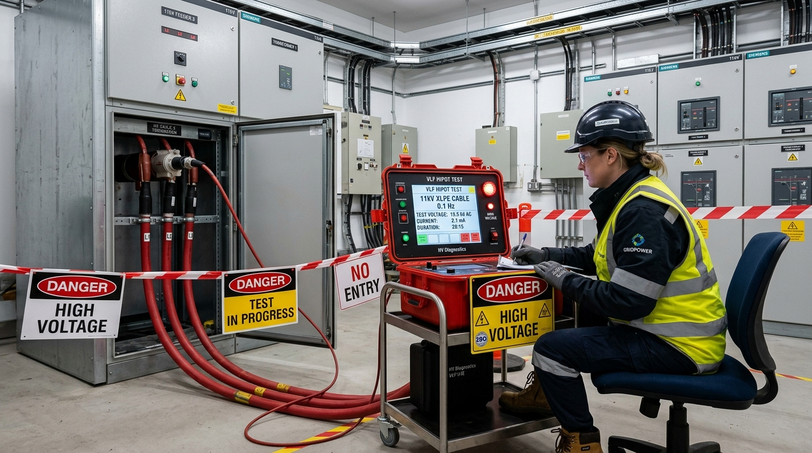
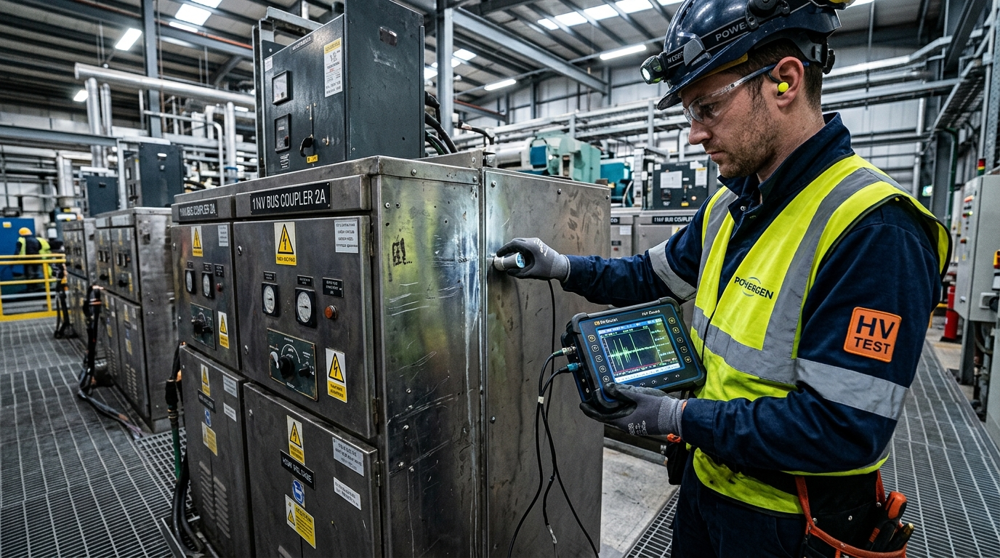
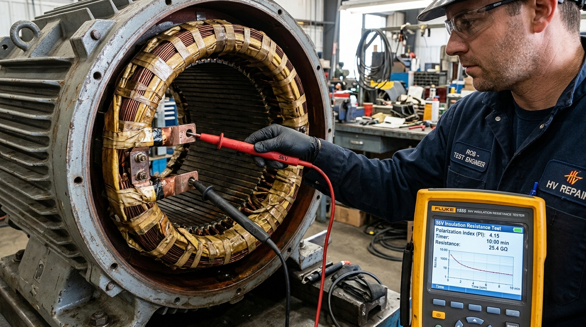
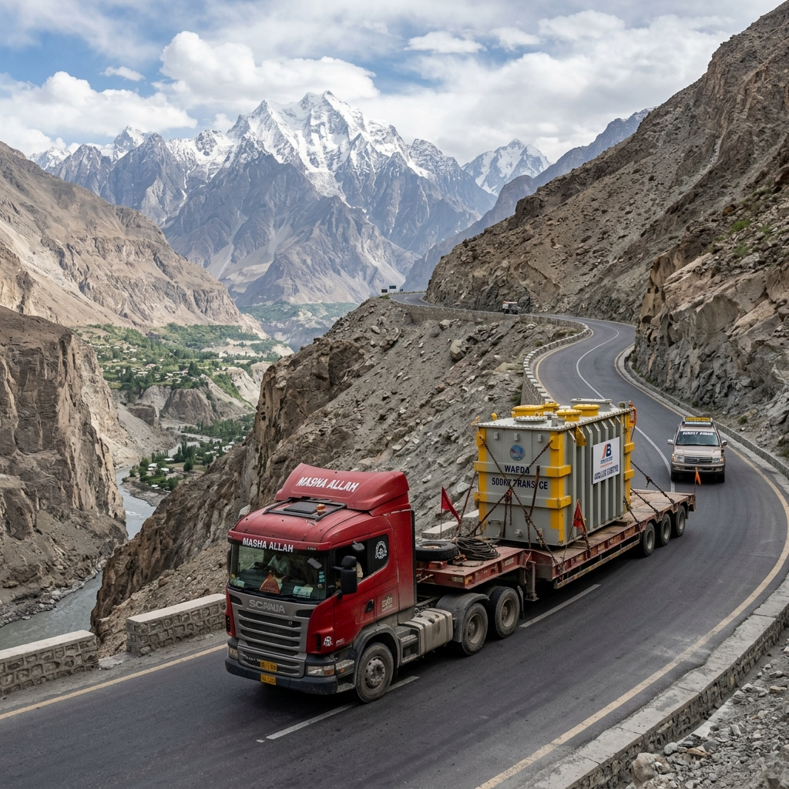
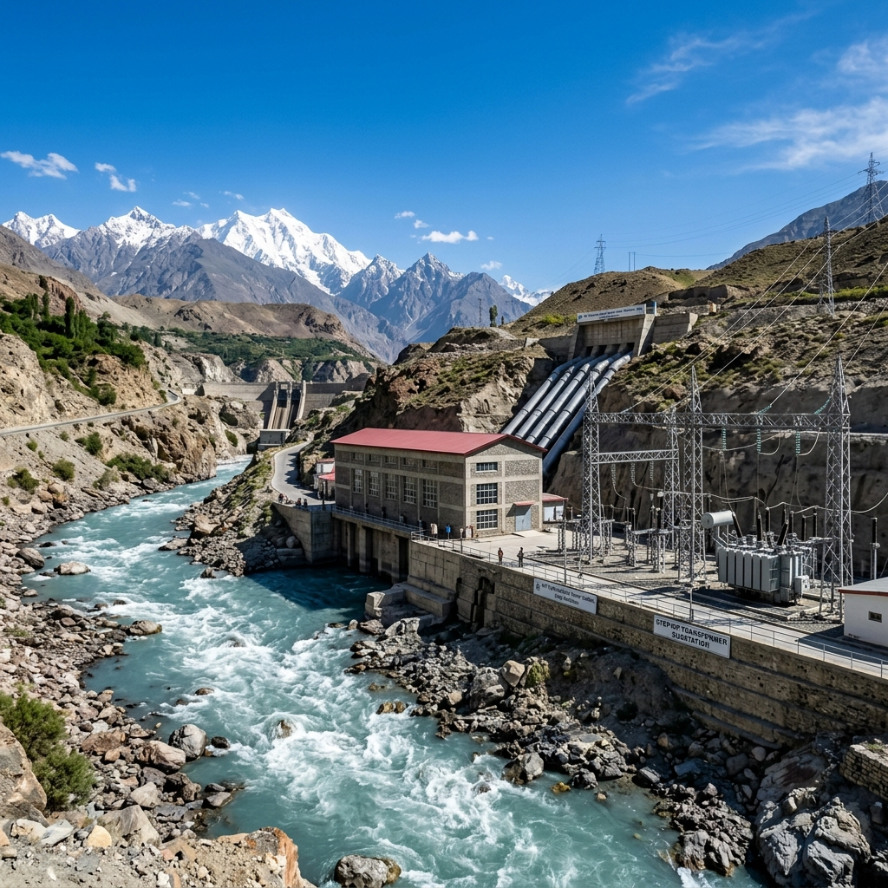
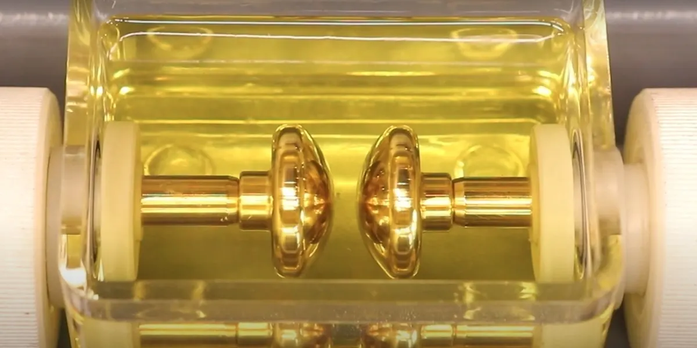
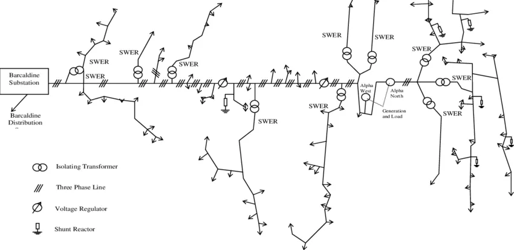

Transformer guides, maintenance & industry insights.
Expert articles from TransfoLine's engineering team — 18 years of field experience distilled into practical guides for factory owners, facility managers and procurement teams across Pakistan.
From the field — practical transformer knowledge.
 Solar & Renewable
Solar & Renewable
Solar Inverter-Duty Transformer Sizing: Multi-Winding 0.8kV to 11kV/33kV Step-Up Design
Engineering guide for 500kW to 5MW industrial solar arrays: calculating kVA capacity, multi-inverter grouping, temperature derating, and Faraday shielding.
Read Guide → Net-Metering EPC
Net-Metering EPC
Industrial Solar Net-Metering in Pakistan: Complete NEPRA & DISCO (LESCO, KE, FESCO) Guide
6-stage statutory roadmap for 500kW+ medium-voltage net-metering: load flow studies, 11kV green meters, generation licensing, and tariff settlement.
Read Guide → Diagnostics
Diagnostics
Why Standard Distribution Transformers Burn Out on Solar Inverter Duty
Technical analysis of high-frequency PWM switching harmonics, DC current injection, magnetic core saturation, and thermal derating factors.
Read Guide → Financial ROI
Financial ROI
Commercial Solar Substation Cost in Pakistan: 500 kW, 1 MW & 2 MW Industrial ROI
Itemized Capex model for 11kV solar substations: step-up transformer pricing, VCB switchgear, green metering, LCOE, and 2.5-year payback calculations.
Read Guide →
Protection & Control
Solar Grid Synchronization: Bi-Directional Green Metering & 11kV Protection Panels
ANSI protection relay coordination: anti-islanding (IEEE 1547), reverse power relays, zero-export throttling, and 11kV VCB grid interconnection.
Read Guide →
Induction Furnace Transformer Sizing: kVA to Tonnage Calculator
Step-by-step calculation formulas to size 1-ton to 10-ton melting furnace substations with power factor margins and heavy busbars.
Read article →Induction vs. Electric Arc Furnace (EAF) Transformers: Differences
Detailed technical comparison of secondary currents (up to 80kA), tap changers, and short-circuit mechanical core bracing.
Read article →
Preventing Furnace Burnouts: OFWF Water Heat Exchanger Care
How acid descaling of copper heat exchanger tubes, differential pressure monitoring, and DGA testing prevent coil burnout.
Read article →
Furnace Transformer Cost in Pakistan: New vs. Used vs. Rewinding
Financial ROI matrix comparing 12-week import lead times vs. 48-hour delivery of certified-used units and 72-hour rewinding.
Read article →
Mitigating Harmonics & Low Power Factor in Furnace Substations
Sizing detuned series reactors (p=7%, p=14%), stopping capacitor explosions, and eliminating monthly DISCO penalties.
Read article →
Why High-Rise Plazas & Malls Require Cast Resin Transformers
Analysis of Building Code of Pakistan Fire Safety Provisions and zero oil contamination in basement plant rooms.
Read article →
Dry-Type vs. Oil-Cooled Transformers: Cost, Safety & Lifespan
Side-by-side 30-year lifecycle cost analysis comparing zero-fluid dry units against liquid-filled distribution units.
Read article →Cast Resin (CRT) vs. Vacuum Pressure Impregnated (VPI) Units
Comparing solid epoxy encapsulation (Class E2/C2) against open-wound VPI in humid Pakistani monsoon conditions.
Read article →
PT100 Temperature Monitoring & Forced Air (AF) Cooling
Digital RTD microcontrollers, trip setpoints, and automated cross-flow ventilation fans (+40% overload capacity).
Read article →Zero-Downtime Dry Transformers for Hospitals & Data Centers
Electrostatic copper shielding, low acoustic noise levels, and non-flammable compliance for healthcare and server rooms.
Read article →Sizing 2.5 MVA, 5 MVA & 10 MVA Power Transformers
MVA capacity calculations, plant demand factors, and N-1 redundancy architecture for large textile composite plants.
Read article →On-Load Tap Changer (OLTC) Operation & Diverter Maintenance
Stabilizing factory voltage against DISCO grid fluctuations without plant shutdowns, contact resistance testing & AVR.
Read article →
Predicting MVA Power Failures: DGA Gas Ratios & SFRA Testing
Duval Triangle gas interpretation and OMICRON frequency traces to detect internal arcing and mechanical coil shifting.
Read article →Fire Protection for 10 MVA+ Units: NIFPS & Deluge Systems
Automatic nitrogen gas purging within 30 seconds, blast containment walls, and oil soak pit engineering.
Read article →Turnkey 132kV to 11kV Dedicated Grid Substation EPC
Single-window delivery from steel gantries and 132kV SF6 breakers to power transformers and NTDC/DISCO NOCs.
Read article →
How to Calculate Transformer kVA: 25k to 1000k Sizing Guide
Practical 3-phase current formulas (Full Load Amps = kVA x 1.391), power factor safety buffers, and factory bill analysis.
Read article →
100% Copper vs. Aluminium Transformers: Losses & Lifespan
Why 99.99% pure electrolytic copper windings pay for themselves in reduced electricity bills and prevent coil burnouts.
Read article →
WAPDA Specification P-10 (DDS-84): Requirements for DISCOs
No-load loss limits, full-load loss limits at 75°C, impedance voltage, and third-party inspection protocols for energization.
Read article →
Pad-Mounted Compact Substations for Modern Housing Schemes
Dead-front tamper-proof construction, integrated RMU loop switching, and aesthetic landscaped footprints for DHA/Bahria.
Read article →Transformer Oil BDV Testing & Dielectric Restoration Guide
IEC 60156 2.5mm spark gap thresholds (>60kV requirement) and on-site high-vacuum dehydration to prevent short-circuits.
Read article →
Complete Transformer Testing Guide: 10 Diagnostic Procedures in Pakistan
TTR turns ratio, Kelvin winding resistance, SFRA, oil BDV, DGA, and Tan Delta: how to diagnose transformer health and prevent factory downtime per IEC 60076.
Read article →Transformer Oil BDV & DGA Testing: Detecting Faults Before Explosion
Interpreting Duval Triangle zones, tracking acetylene (C2H2) arcing thresholds, and on-site high-vacuum oil dehydration to restore BDV above 60kV.
Read article →Sweep Frequency Response Analysis (SFRA): Detecting Winding Movement
How high-frequency frequency sweeps (20Hz–2MHz) detect mechanical radial buckling, axial coil shifting, and core looseness after external short-circuits.
Read article →
Dry-Type vs. Oil-Immersed Transformer Testing: Standards & Protocols
Partial discharge (PD ≤ 10 pC) limits, PT100 temperature controller calibration, and fire safety protocols for commercial indoor cast resin transformers.
Read article →Insulation Resistance (Megger) Guide: DAR, PI & IEEE 43 Limits
How to test 11kV transformers and HT motors, eliminate surface leakage with Guard terminals, and apply temperature correction formulas.
Read article →
AC vs. DC vs. VLF 0.1Hz Hipot: Testing 11kV/33kV Cables & Switchgear
Why DC testing destroys modern XLPE cables, and how 0.1Hz VLF sinusoidal AC Hipot complies with IEEE 400.2 cable commissioning standards.
Read article →
Partial Discharge (PD) Testing: Detecting Hidden Insulation Breakdown
Using online TEV, airborne ultrasound, and HFCT sensors to pinpoint microscopic dielectric erosion before an explosive switchgear arc-flash.
Read article →
What is Polarization Index (PI) Testing? Diagnosing Motors & Transformers
IEEE 43 pass/fail thresholds, 10-minute absorption curve analysis, and thermal oven drying protocols for industrial HT electric motors.
Read article →
Industrial Transformer Coil Rewinding & Repair in Multan
4-step safety isolation, 99.99% pure copper coil rewinding specs, Nomex insulation, Vacuum Pressure Impregnation (VPI), and post-repair testing in Multan Industrial Estate.
Read article →
Certified Used vs Repair Transformer Guide for Multan
Comparing downtime cost of workshop rewinding (5–7 days) vs instant certified used stock replacement (12–24 hours) with trade-in scrap credit.
Read article →
On-Site Transformer Oil Dehydration & Sludge Cleaning in Multan
Mobile vacuum oil dehydration for Multan factories — restoring BDV strength (>60 kV), removing sludge and moisture in Multan Industrial Estate & Vehari Road.
Read article →
MEPCO Grid Connection & HT/LT Switchgear Guide for Multan
MEPCO 11 KV VCB panels, PFI capacitor banks, Dyn11 vector groups, impulse test certification, and Multan sanction load approval.
Read article →
Managing Severe Summer Overheating (48°C+) in Multan Transformers
Technical guide on high ambient thermal margin design, 99.99% copper coils, ONAF cooling, and dust filtration in Multan cotton ginning & textile mills.
Read article →
Multan Transformer Price & Specification Guide (2026)
Complete 2026 buyer guide for 25 KVA to 2,500 KVA transformers delivered to Multan Industrial Estate Phase 1 & 2 and Vehari Road with 12–24h motorway delivery.
Read article →
Emergency Transformer Repair & 99.99% Copper Coil Rewinding in Islamabad
4-step safety isolation, 99.99% pure copper coil rewinding specs, Nomex insulation, Vacuum Pressure Impregnation (VPI), and post-repair routine testing.
Read article →
Certified Used vs New Transformer Cost-Benefit Guide for Islamabad
Comparing downtime cost of workshop rewinding vs instant certified used stock replacement (12–24 hours) with trade-in scrap credit.
Read article →
On-Site Transformer Oil Dehydration & BDV Testing in Islamabad
Mobile vacuum oil dehydration for Islamabad commercial plazas & factories — restoring BDV strength (>60 kV), removing sludge and moisture in Blue Area & I-9.
Read article →
IESCO Grid Connection & HT/LT Switchgear Guide for Islamabad
IESCO 11 KV VCB panels, PFI capacitor banks, Dyn11 vector groups, impulse test certification, and sanction load approval.
Read article →
CDA Low-Noise & Indoor Transformer Guide for Islamabad Plazas
CDA acoustic & indoor dry-type transformer selection guide for Islamabad commercial towers — cast resin vs hermetically sealed oil units and decibel limits.
Read article →
Islamabad Transformer Price & Specification Guide (2026)
Complete 2026 buyer guide for 25 KVA to 2,500 KVA transformers delivered to Blue Area plazas and I-9/I-10 industrial units with 12–24h motorway delivery.
Read article →
Industrial Transformer Coil Rewinding & Repair in Rawalpindi
4-step safety isolation, 99.99% pure copper coil rewinding specs, Nomex insulation, Vacuum Pressure Impregnation (VPI), and post-repair testing in Rawat.
Read article →
Certified Used vs Repair Transformer Decision Guide for Rawalpindi
Comparing downtime cost of workshop rewinding (5–7 days) vs instant certified used stock replacement (12–24 hours) with trade-in scrap credit.
Read article →
On-Site Transformer Oil Dehydration & BDV Restoration in Rawalpindi
Mobile vacuum oil dehydration for Rawalpindi factories — restoring BDV strength (>60 kV), removing sludge and moisture in Rawat Industrial Estate & IJP Road.
Read article →
IESCO Rawalpindi Circle Grid Connection & HT/LT Switchgear Guide
IESCO Rawalpindi 11 KV VCB panels, PFI capacitor banks, Dyn11 vector groups, impulse test certification, and sanction load approval.
Read article →
Selecting Heavy Duty Power Transformers for Rawat Industrial Estate
Technical guide on heavy-duty power transformers for Rawat Industrial Estate Rawalpindi — 500 KVA to 8,000 KVA specs, 99.99% copper coils, and motor surge protection.
Read article →
Transformer Price & Spec Guide for Rawalpindi & Rawat Estate (2026)
Complete 2026 buying guide for 25 KVA to 2,500 KVA transformers, wholesale direct rates vs local middleman markups, and 12–24 hour motorway delivery.
Read article →
Industrial Transformer Coil Rewinding & Emergency Repair Guide in Faisalabad
4-step safety isolation, 99.99% pure copper coil rewinding specs, Nomex insulation, Vacuum Pressure Impregnation (VPI), and post-repair testing.
Read article →
Certified Used vs Repair Transformer Guide for Faisalabad Factory Owners
Comparing downtime cost of workshop rewinding (5–7 days) vs instant certified used stock replacement (12–24 hours) with trade-in scrap credit.
Read article →
FESCO Grid Connection & HT/LT Switchgear Protection Guide for Faisalabad
FESCO 11 KV VCB panels, PFI capacitor banks, Dyn11 vector groups, impulse test certification, and sanction load approval.
Read article →
On-Site Transformer Oil Dehydration & Filtration Guide for Faisalabad
Mobile vacuum oil dehydration for Faisalabad factories — restoring BDV strength (>60 kV), removing sludge and moisture in Khurrianwala & M-3.
Read article →
Preventing VFD Harmonic Overheating in Faisalabad Textile Mills
High-frequency harmonic distortion from air-jet loom VFD drives — K-factor rated insulation, electrostatic copper shielding, and thermal oil protection.
Read article →
Transformer Price & Specification Guide for Faisalabad Textile Mills
Complete 2026 buying guide for 25 KVA to 2,500 KVA transformers, wholesale direct rates vs local middleman markups, and 12–24 hour motorway delivery.
Read article →
Solar-Hydel Hybrid & Inverter Duty Transformers in Gilgit & Skardu
Technical guide on solar inverter duty step-up transformers (0.4kV to 11kV/33kV), harmonic filtration, electrostatic shielding, and off-grid GBED integration.
Read article →
Emergency Transformer Repair & Rewinding Guide for Gilgit & Skardu
Emergency 4-step isolation protocol, on-site field testing, workshop rewinding vs certified used stock swap decision matrix for Gilgit-Baltistan.
Read article →Preventing Hotel & Commercial Transformer Overloads in Skardu & Hunza
Commercial transformer load sizing and winter heating overload prevention guide for hotels, resorts, and commercial plazas in Skardu, Hunza, and Gilgit.
Read article →
Transformer Price & Specification Guide Gilgit & Skardu (2026)
Complete 2026 buying and spec guide for 25 KVA to 2,000 KVA transformers delivered via Karakoram Highway (KKH) to Gilgit, Skardu, and Hunza.
Read article →
Micro-Hydel Transformer & Switchgear Protection in Gilgit-Baltistan
Technical guide on micro-hydel step-up transformers (415V to 11 KV / 33 KV), VCB switchgear protection, and Karakoram Highway (KKH) mountain freight handling.
Read article →
Why Sub-Zero Winters Freeze Transformer Oil in Skardu & Gilgit
Technical guide on sub-zero winter temperatures (-20°C) in Skardu and Gilgit — oil viscosity surge, micro-ice crystal breakdown, and low-pour-point insulating oil.
Read article →
Transformer Rewinding & Overhaul Guide for Karachi Factories
Technical guide on copper coil rewinding for Karachi industrial plants — copper vs aluminium comparison, VPI varnish impregnation, and testing procedure.
Read article →
Buying Certified Used vs. Repairing a Damaged Transformer in Karachi
Financial decision guide for Karachi factory managers: when to rewind a burnt transformer vs when to purchase a certified used replacement with warranty.
Read article →
Navigating K-Electric Grid Surges — HT & LT Panel Protection Guide
Technical guide to protecting industrial transformers under Karachi's K-Electric grid — HT & LT switchgear design, numerical relays, surge arresters, and K-Electric compliance.
Read article →
Why Karachi Coastal Humidity Destroys Transformer Oil 2x Faster
Technical guide on coastal moisture degradation in transformer oil, dielectric breakdown testing, and mobile high-vacuum oil dehydration in SITE, Korangi & Port Qasim.
Read article →
Top 5 Transformer Failure Causes in SITE & Korangi Industrial Areas
Why transformers burn out in Karachi industrial estates — voltage surges, coastal oil moisture breakdown, phase imbalance, and preventive maintenance checklist.
Read article →
Transformer Price in Karachi 2026 — Complete Buying & Specification Guide
2026 PKR price breakdown for 25 KVA to 2,000 KVA transformers, freight delivery to SITE & Korangi, K-Electric connection compliance, and certified used options.
Read article →
New vs Used Transformers — Which One Should You Buy in 2026?
Side-by-side comparison of new and used transformers — warranty, lifespan, lead time and when each option makes financial sense for your factory.
Read article →
Transformer Oil Dehydration — Why It Matters & How It Works
Complete guide to transformer oil treatment, filtration and dehydration. How proper oil maintenance extends transformer life by 5–10 years.
Read article →
What Size Transformer Do I Need? KVA Sizing Guide for Pakistan
Step-by-step KVA calculator — match your load requirements to the right transformer size. Covers 25 KVA to 8000 KVA for industrial use.
Read article →
Transformer Maintenance Checklist — Prevent Failures Before They Happen
The preventive maintenance schedule every factory owner needs. Monthly, quarterly, and annual checks that save you from costly breakdowns.
Read article →
Emergency Transformer Repair — What to Do When Your Transformer Fails
Step-by-step emergency protocol when a transformer trips or fails. Immediate safety steps, who to call, and how to minimise downtime.
Read article →
Transformer Oil Testing — Why Oil Analysis Saves You Money
How regular oil testing catches problems early — dissolved gas analysis, moisture content, and breakdown voltage testing explained.
Read article →
Step-Up vs Step-Down Transformers — Differences, Uses & Selection
Clear explanation of step-up and step-down transformers — how they work, where each is used, and which type your facility needs.
Read article →
Electrical Safety Standards for Transformers in Pakistan — 2026 Guide
Key safety regulations, installation codes and compliance requirements for transformer installations across Pakistan.
Read article →
Transformer Winding Types & Common Failures — What You Need to Know
Core and shell type windings explained — common failure modes, warning signs, and when rewinding makes more sense than replacement.
Read article →Distribution Transformers Explained — Types, Specs & Selection Guide
Everything about distribution transformers — oil-immersed vs dry-type, pole mounted vs pad mounted, and how to select the right one.
Read article →
Complete Transformer Oil Guide — Types, Testing & Replacement
Everything about transformer oil — mineral vs synthetic, when to filter vs replace, oil purification methods, and how to buy quality insulating oil.
Read article →
How to Buy a Transformer in Pakistan — Dealer & Supplier Guide
What to look for when choosing a transformer dealer — certifications, warranty, delivery, and how to avoid common buying mistakes in Pakistan.
Read article →Need expert advice on your transformer?
Our engineers have 18+ years of experience — get a free consultation today.
Get a wholesale quote in minutes.
Tell us what you need. Our team replies within two hours, Monday to Saturday.